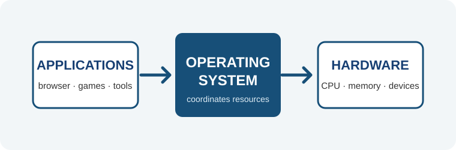

An operating system turns computer hardware into a system people can use. It works between applications and the physical machine, coordinating resources and providing services that programs need.
The operating system coordinates the processor, memory, storage, and connected devices so programs can use them.
A graphical desktop, command line, or touchscreen gives people a way to tell a computer what to do.
Applications rely on operating-system services instead of having to manage every hardware detail themselves.